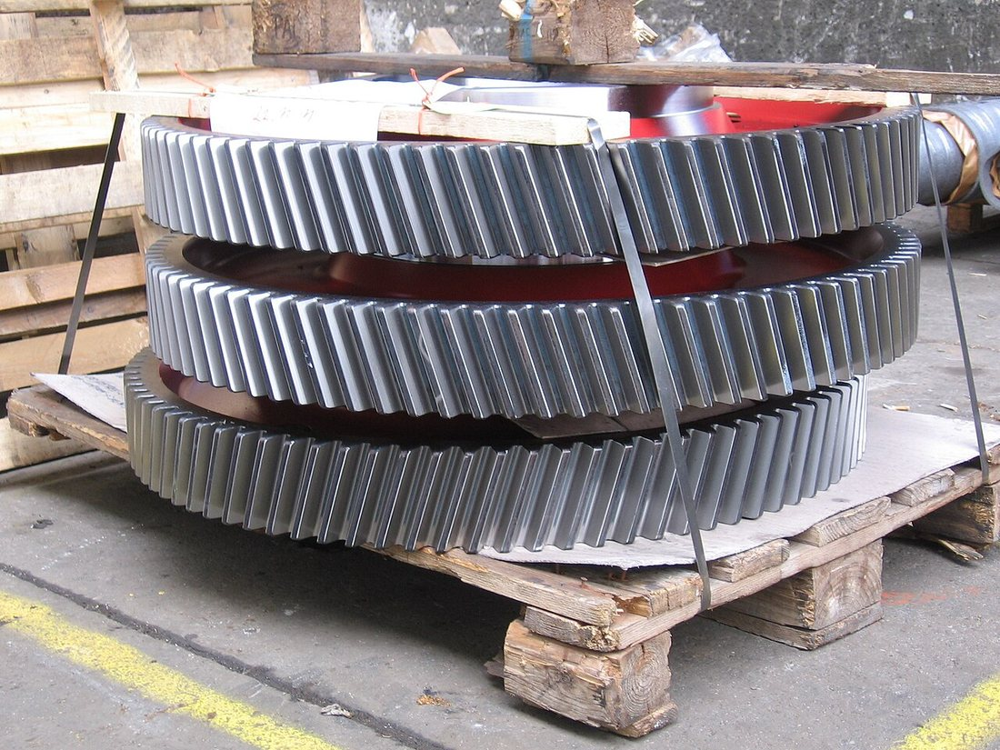
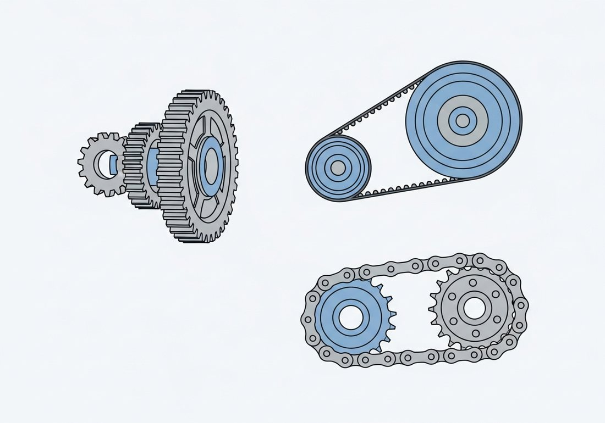
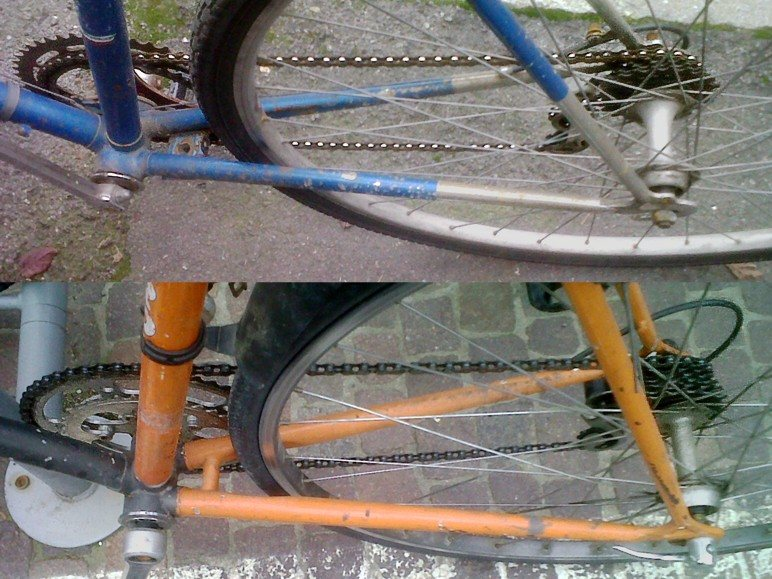
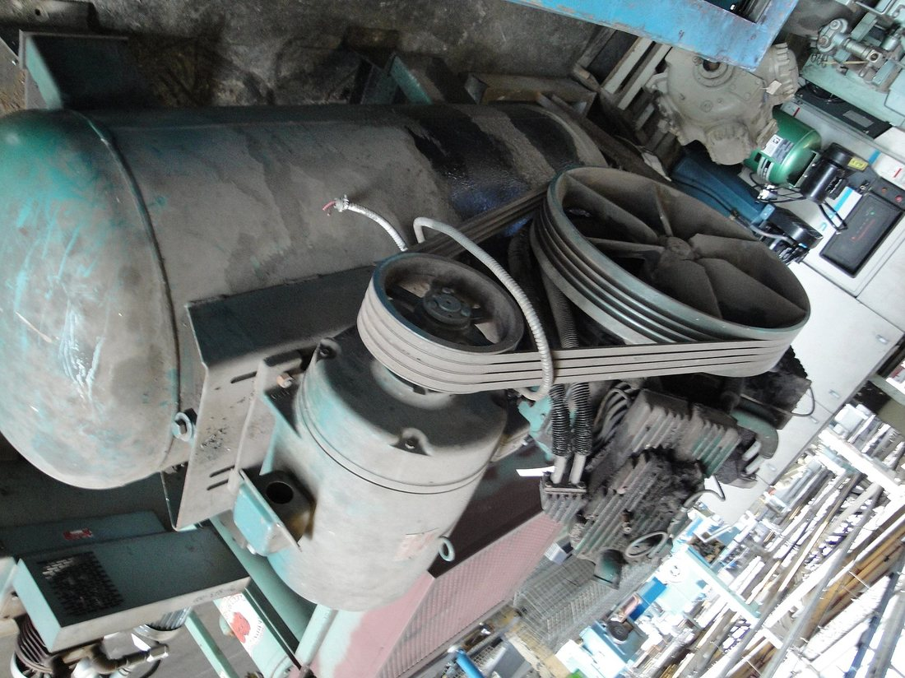
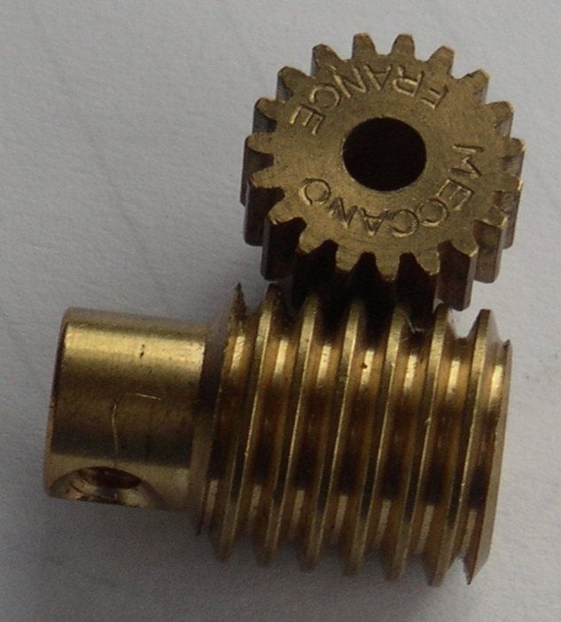

Көркем еңбек (ұлдар) · 4-бөлім · Машина және электротехника Art & Craft (Boys) · Section 4 · Machines & Electrics Художественный труд (мальчики) · Раздел 4 · Машины и электротехника
Машинатану: механизмдер мен берілістер
Machine Science: Mechanisms and Gears
Машиноведение: механизмы и передачи
Қозғалыс пен күш машинада қалай беріледі: тісті дөңгелек, белдік, шынжыр және червяк берілістері. How motion and force travel through a machine: gear, belt, chain and worm drives. Как движение и сила передаются в машине: зубчатые, ременные, цепные и червячные передачи.
Машина деген не? What is a machine? Что такое машина?
Машина — энергияны пайдалы жұмысқа айналдыратын құрылғы. Әрбір машинада үш бөлік бар: қозғаушы (қозғалтқыш, адам күші), беруші (механизм) және атқарушы (жұмыс мүшесі). Механизм — қозғалысты бір буыннан екіншісіне беретін және түрлендіретін бөлшектер тізбегі. Беріліс (передача) — қозғалыс пен айналу моментін бір білікке (валға) екіншісіне беретін механизм. Беріліс жылдамдықты, бағытты және күшті өзгерте алады: кіші тісті дөңгелек үлкенін айналдырғанда жылдамдық азаяды, ал күш артады. A machine is a device that turns energy into useful work. Every machine has three parts: the driver (engine or muscle power), the transmission (the mechanism) and the working part (the tool that acts on the workpiece). A mechanism is a chain of parts that transfers and transforms motion from one link to another. A drive (transmission) is the mechanism that carries rotation and torque from one shaft to another. A drive can change speed, direction and force: when a small gear turns a large one, speed drops but force grows. Машина — это устройство, превращающее энергию в полезную работу. В каждой машине есть три части: двигатель (мотор или сила человека), передаточный механизм и рабочий орган, который действует на изделие. Механизм — это цепочка деталей, которая передаёт и преобразует движение от одного звена к другому. Передача — это механизм, переносящий вращение и крутящий момент с одного вала на другой. Передача может изменять скорость, направление и силу: когда маленькое колесо вращает большое, скорость падает, а сила (момент) возрастает.


Берілістердің негізгі түрлері Main types of drives Основные виды передач
- Тісті берілісGear driveЗубчатая передача
- Тістері ілінген екі дөңгелек. Дәл, қуатты, сырғанамайды; бағытты қарама-қарсыға өзгертеді.Two toothed wheels in mesh. Precise, powerful, no slip; reverses the direction of rotation.Два колеса с зубьями в зацеплении. Точная, мощная, без скольжения; меняет направление вращения на обратное.
- Белдік берілісBelt driveРеменная передача
- Екі шкивті икемді белдік байланыстырады. Тыныш, жұмсақ, алыс қашықтыққа береді; сәл сырғанауы мүмкін.A flexible belt links two pulleys. Quiet and smooth, works over distance; may slip a little.Гибкий ремень связывает два шкива. Тихая и плавная, работает на расстоянии; может немного проскальзывать.
- Шынжыр берілісChain driveЦепная передача
- Жұлдызшаларды (звёздочки) шынжыр байланыстырады. Сырғанамайды әрі алыс қашықтыққа береді — велосипед, мотоцикл.A chain links two sprockets. No slip and works at a distance — bicycles, motorcycles.Цепь связывает две звёздочки. Без проскальзывания и на расстоянии — велосипед, мотоцикл.
- Червяк берілісWorm driveЧервячная передача
- Бұрандалы червяк тісті дөңгелекті айналдырады. Жылдамдықты қатты азайтады, өздігінен тежеледі.A screw-like worm turns a gear wheel. Greatly reduces speed and is self-locking.Винтовой червяк вращает зубчатое колесо. Сильно снижает скорость и самотормозится.
Беріліс саны: жылдамдық пен күш Gear ratio: speed and force Передаточное число: скорость и сила
u = z₂ / z₁ = n₁ / n₂
u — беріліс саны; z — тіс саны; n — айналу жиілігі. Жетекші (1) кіші, жетектегі (2) үлкен болса, u > 1. u is the gear ratio; z the number of teeth; n the speed of rotation. If driver (1) is small and driven (2) is large, then u > 1. u — передаточное число; z — число зубьев; n — частота вращения. Если ведущее (1) меньше, а ведомое (2) больше, то u > 1.
Баяулату (u > 1) Reduction (u > 1) Понижение (u > 1)
Жылдамдық азаяды, ал айналу моменті (күш) артады. Ауыр жүкті көтеруге, бұрғылауға қолайлы. Speed drops, but torque (force) rises. Good for lifting heavy loads and drilling. Скорость падает, а крутящий момент (сила) растёт. Подходит для подъёма тяжестей и сверления.
Жеделдету (u < 1) Overdrive (u < 1) Повышение (u < 1)
Жылдамдық артады, момент азаяды. Желдеткіш, бұрғы шпинделі сияқты жылдам тораптарда. Speed rises, torque drops. Used in fast parts like fans and drill spindles. Скорость растёт, момент падает. Применяется в быстрых узлах: вентиляторы, шпиндель дрели.
Мысал: жетекші дөңгелекте z₁ = 20 тіс, жетектегі дөңгелекте z₂ = 60 тіс. Сонда u = 60 / 20 = 3. Жетекші үш рет айналғанда, жетектегі дөңгелек бір рет қана айналады, бірақ күш үш есе артады. Example: the driving wheel has z₁ = 20 teeth, the driven wheel z₂ = 60 teeth. Then u = 60 / 20 = 3. For every three turns of the driver, the driven wheel turns once — but the force is three times greater. Пример: на ведущем колесе z₁ = 20 зубьев, на ведомом z₂ = 60 зубьев. Тогда u = 60 / 20 = 3. На каждые три оборота ведущего колеса ведомое делает один оборот, зато сила возрастает в три раза.
Берілістерді салыстыру Comparison of drives Сравнение передач
| Передача | Связь | Достоинства | Недостатки | Где применяют |
|---|---|---|---|---|
| Зубчатая | зацепление зубьев | точная, мощная, без скольжения | шум, нужна смазка, дороже | коробки передач, часы, станки |
| Ременная | трение ремня о шкив | тихая, плавная, на расстоянии | проскальзывание, износ ремня | станки, стиральные машины, авто |
| Цепная | цепь и звёздочки | без скольжения, на расстоянии | шум, требует смазки | велосипед, мотоцикл, конвейер |
| Червячная | винт и колесо | большое понижение, самоторможение | низкий КПД, нагрев | лебёдки, домкраты, рулевое |
| Беріліс | Байланыс | Артықшылығы | Кемшілігі | Қолданылуы |
|---|---|---|---|---|
| Тісті | тістердің ілінісі | дәл, қуатты, сырғанамайды | шу, майлау керек, қымбат | беріліс қорабы, сағат, станок |
| Белдік | белдіктің үйкелісі | тыныш, жұмсақ, қашықтыққа | сырғанау, белдік тозады | станок, кір жуғыш, көлік |
| Шынжыр | шынжыр мен жұлдызша | сырғанамайды, қашықтыққа | шу, майлауды қажет етеді | велосипед, мотоцикл, конвейер |
| Червяк | бұранда мен дөңгелек | қатты баяулатады, өзі тежеледі | ПӘК төмен, қызады | шығыр, домкрат, руль |
| Drive | Link | Advantages | Drawbacks | Where used |
|---|---|---|---|---|
| Gear | meshing teeth | precise, powerful, no slip | noisy, needs oil, costlier | gearboxes, clocks, machine tools |
| Belt | friction belt–pulley | quiet, smooth, works at distance | slips, belt wears out | machines, washers, cars |
| Chain | chain and sprockets | no slip, works at distance | noisy, needs lubrication | bicycle, motorcycle, conveyor |
| Worm | screw and wheel | big reduction, self-locking | low efficiency, heats up | winches, jacks, steering |
Берілістер өмірде: суретке басып, үлкейт Drives in real life: tap a photo to enlarge Передачи в жизни: нажми на фото, чтобы увеличить



Берілісті қалай «оқу» керек How to "read" a drive Как «прочитать» передачу
Жетекші буынды тап. Қозғалыс қайдан басталады? Қозғалтқышқа немесе тұтқаға жалғанған бөлшек — жетекші. Find the driver. Where does motion start? The part linked to the motor or handle is the driver. Найди ведущее звено. Откуда начинается движение? Деталь, связанная с мотором или ручкой, — ведущая.
Байланыс түрін анықта. Тістер ме, белдік пе, шынжыр ма, әлде бұранда ма? Бұл — беріліс түрі. Identify the link. Teeth, a belt, a chain or a screw? That tells you the type of drive. Определи тип связи. Зубья, ремень, цепь или винт? Это и есть вид передачи.
Өлшемдерін салыстыр. Жетектегі дөңгелек үлкенірек пе? Олай болса — баяулату, күш артады. Compare the sizes. Is the driven wheel bigger? Then it is a reduction — force increases. Сравни размеры. Ведомое колесо больше? Значит, это понижение — сила возрастает.
Беріліс санын есепте. u = z₂ / z₁. Осыдан жылдамдық пен моменттің қалай өзгеретінін білесің. Work out the ratio. u = z₂ / z₁. From this you learn how speed and torque change. Посчитай передаточное число. u = z₂ / z₁. По нему узнаешь, как меняются скорость и момент.
Қауіпсіздік ережелері Safety rules Правила безопасности
- • Жұмыс істеп тұрған берілісті ешқашан қолмен ұстама — саусақ тістер мен шынжырға кіріп кетуі мүмкін.• Never touch a running drive — fingers can be caught between teeth or in the chain.• Никогда не трогай работающую передачу — пальцы может затянуть в зубья или цепь.
- • Қорғаныш қаптамасынсыз (кожух) машинаны қоспа.• Do not switch on a machine without its guard cover.• Не включай машину без защитного кожуха.
- • Кең жең мен бос киімді түйме, ұзын шашты бас.• Button up loose sleeves and clothing; tie back long hair.• Застегни свободные рукава и одежду, убери длинные волосы.
- • Реттеу мен майлауды тек тоқтатылған машинада жаса.• Adjust and lubricate only when the machine is stopped.• Настройку и смазку выполняй только на остановленной машине.
Негізгі терминдер Key terms Ключевые термины
- Білік (вал)ShaftВал
- Айналатын деталь, оған дөңгелектер мен шкивтер бекітіледі.A rotating part that carries the wheels and pulleys.Вращающаяся деталь, на которой закреплены колёса и шкивы.
- Мойынтірек (подшипник)BearingПодшипник
- Білікті ұстап, үйкелісті азайтып, оңай айналуға көмектеседі.Holds the shaft and reduces friction so it turns easily.Держит вал и снижает трение, помогая ему легко вращаться.
- ПӘК (КПД)EfficiencyКПД
- Пайдалы жұмыстың кіріс энергияға қатынасы; үйкеліс пен жылудан төмендейді.The ratio of useful work to input energy; lowered by friction and heat.Отношение полезной работы к затраченной энергии; снижается из-за трения и нагрева.